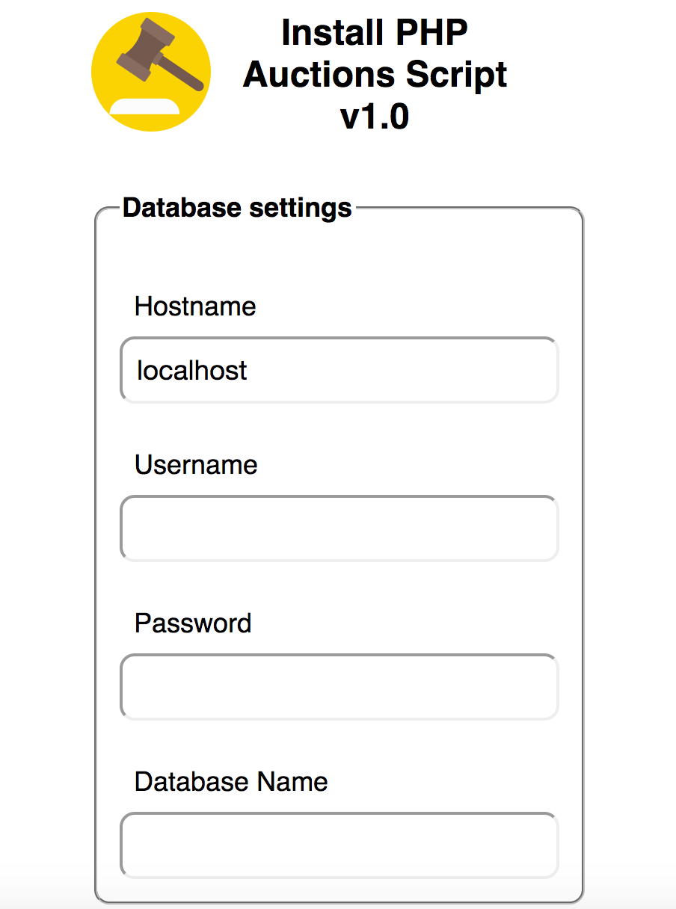
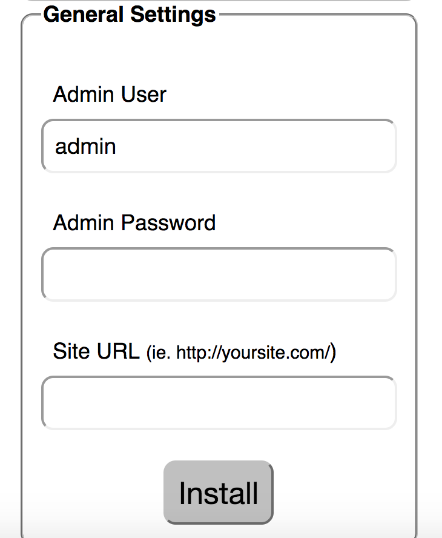
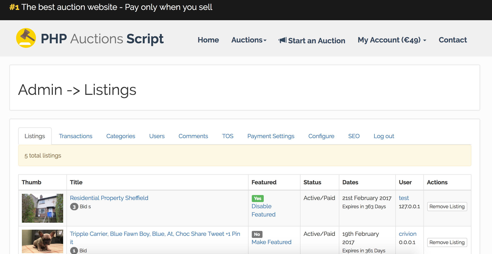
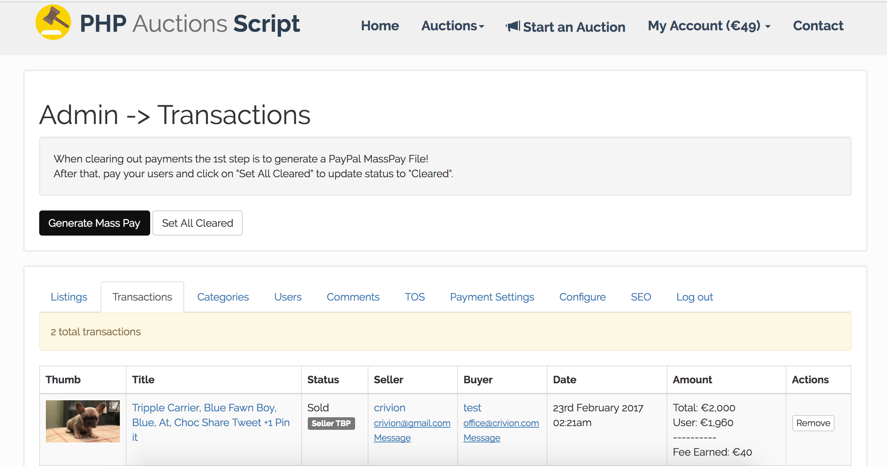
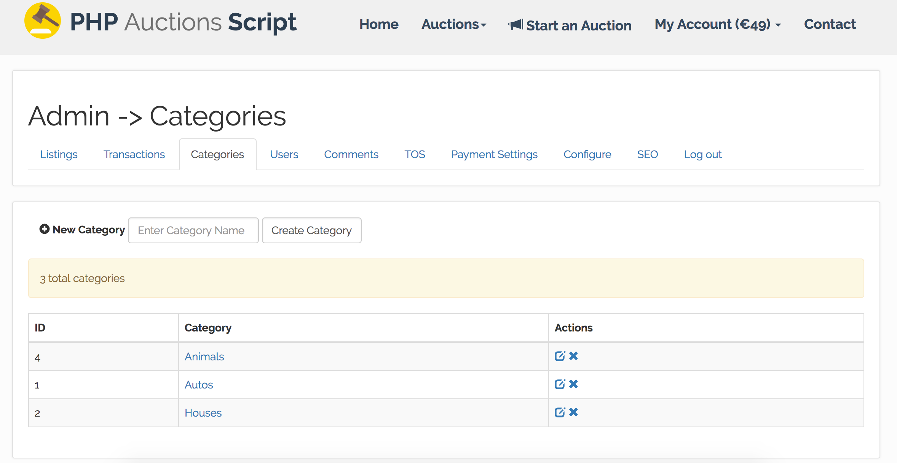
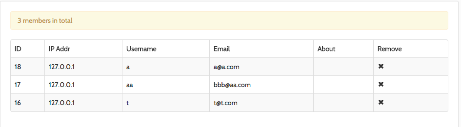
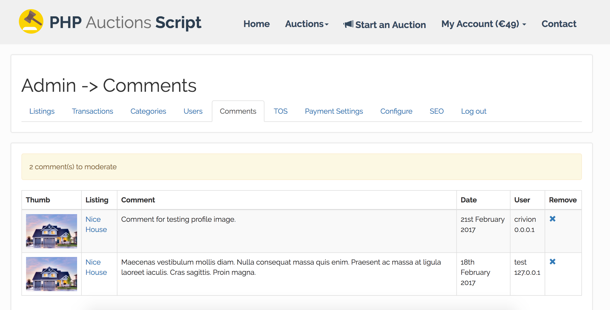
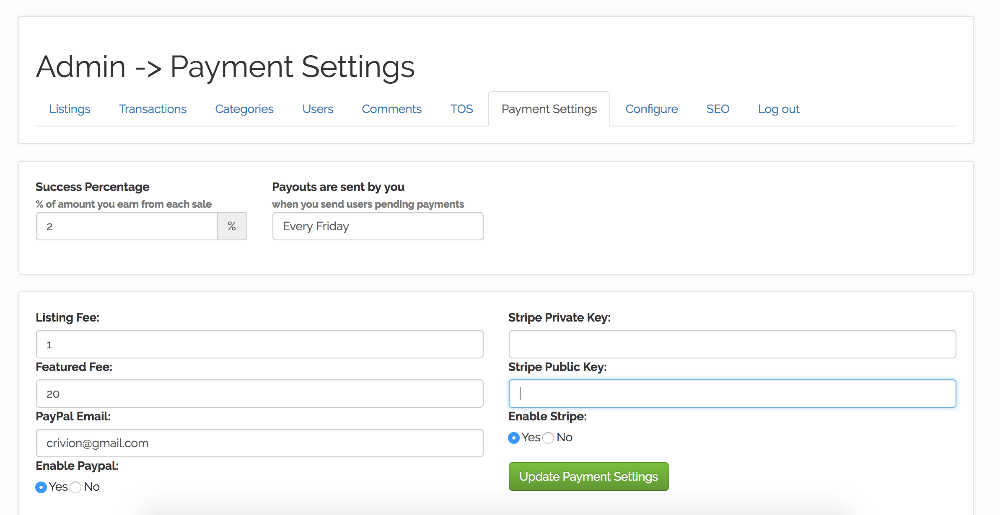
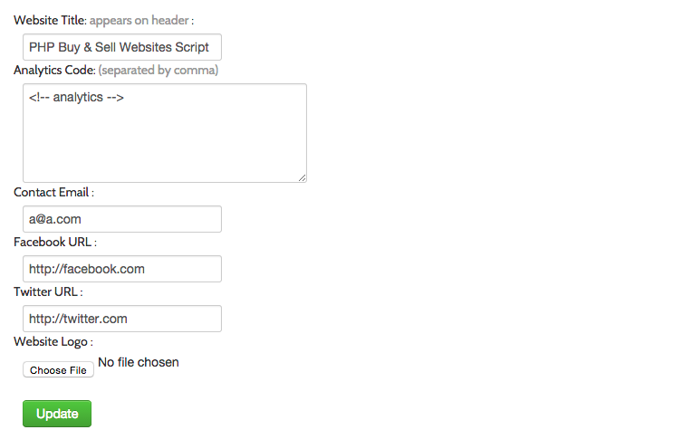
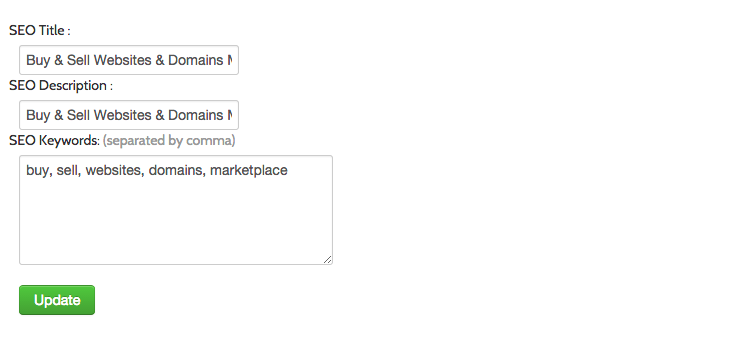

“PHP Auction Script” Documentation by “crivion” v1.4
“PHP Auction Script”
Thank you for purchasing my script. If you have any questions that are beyond the scope of this help file, please feel free to email via my user page contact form here. Thanks so much!
Table of Contents
- Uploading & Installing
- Manage Auctions
- Manage Transactions
- Manage Categories
- Manage Members
- Manage Comments
- Configure Payment Settings
- Configure Website Title, Logo, Social URL's and Contact Email
- Configure SEO Title, Keywords, Description
- Final Step - Setup Cronjob
- Upgrading from v1.3 to v1.4
A) Uploading & Installing - top
- Connect to your hosting and upload the extracted zip file folder of the script to your domain. (must be under either root or subdomain. No subfolders please.)
- Make sure .htaccess file is included otherwise the script will mallfunction as the file is required to do the mod_rewrite SEO friendly URL's job
- Go to yoursite.com/install/ and enter your database connection details and desired admin login credentials


B) Admin : Manage Auctions - top
- Navigate to your-website-url.com/admin and login with the credentials you've just configured earlier at step A).
- You will see a table with all the listings and their actions: delete, manually approve, manually set as featured, etc.

C) Admin : Transactions - top
- Navigate to your-website-url.com/admin and login with the credentials you've just configured earlier at step A).
- Important - this is the core of the business side of this script.
Here you generate paypal masspay file to use & pay your auctioneers!
- Also you will need to click on "Set All Cleared" after paying using PayPal to reset everyone's balances

E) Admin : Manage Auction Categories - top
- Navigate to your-website-url.com/admin and login with the credentials you've just configured earlier at step A).
- You will see a table with all the categories with an option to update or remove them.
- There's also a form to quickly add a new auction category

E) Admin : Members - top
- Navigate to your-website-url.com/admin and login with the credentials you've just configured earlier at step A).
- You will see a table with all the users with an option to remove them.

- Navigate to your-website-url.com/admin and login with the credentials you've just configured earlier at step A).
- You will see a table with all the comments with an option to remove them.

G) Admin : Payment Settings - top
- Navigate to your-website-url.com/admin and login with the credentials you've just configured earlier at step A).
- You will see a form with the following fields: Listing Fee: the price to charge (in USD) for a regular listing, Featured fee - listings that appear on homepage and paypal email to collect payments

H) Website Title, Logo, Social URL's and Contact Email - top
- Navigate to your-website-url.com/admin and login with the credentials you've just configured earlier at step A).
- You will see a form with which will help you configure Website Title (appears in header near logo), upload a logo image field, facebook & twitter URLS (appears in footer) and contact email (for the form on the contact page)

I) SEO Module - top
- Navigate to your-website-url.com/admin and login with the credentials you've just configured earlier at step A).
- You will see a form with the following fields: SEO TITLE, SEO KEYWORDS AND SEO DESCRIPTION.
- All these will appear as meta tags on homepage

I) Setting up the Cron Job - top
Please go to yoursite.com/cron-path.php for further instructions!
L) Upgrading from v1.3 to v1.4 - top
This update includes:
- Added cronjob to pick winners for expired auctions without a BIN - not a manual feature anymore!
- Take payments not only for BIN listings but also for auctions won by highest bidder.
Step 1 - Copy and overwrite all files from upgrade-files/* folder to the following place.
Controllers
- application/controllers/cron.php
- application/controllers/payments.php
- application/controllers/users.php
- application/controllers/home.php
Views
- application/views/sidebar.php
- application/views/user-won.php
- application/views/upgrade.php
At the root folder ( ie. where index.php is located)
cron-path.php
Step 2 - Configure Cronjob (see step I)
Step 3 - Go to Database Upgrade - YourSiteURL.tld/home/upgrade
Alex Crivion
Go To Table of Contents